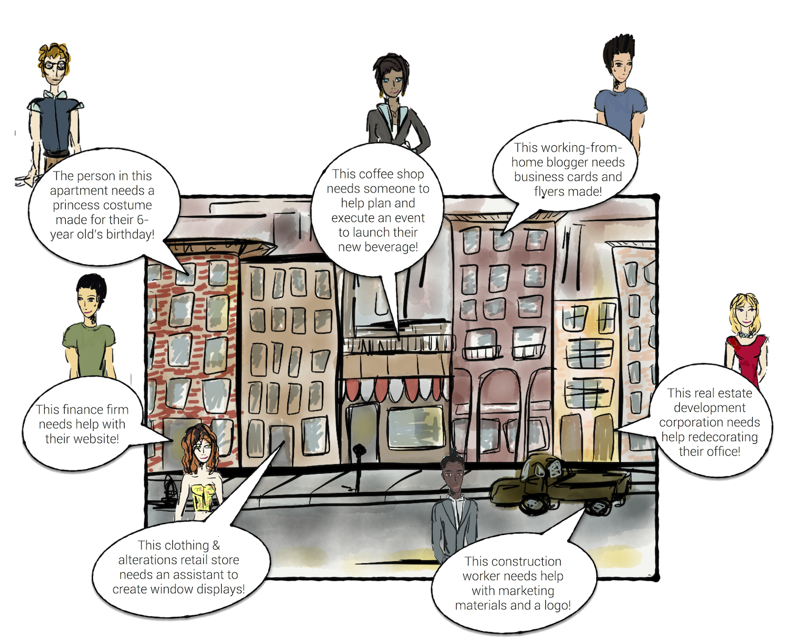

If you're open for business, so are we.

Open Campus for Shops
Running your shop or boutique is a 24/7 job. You are tracking inventory, managing accounting, supervising employees, and setting displays. With all the projects you have piling up, you could probably use a little help. That’s where Open Campus comes in. We can help you find a student to take one more project off your mounting to-do list.
Open Campus for Startups
If you work at a startup, you understand the power of innovative thinking. Every startup employee wears multiple hats and invests his or her energy in different directions, which can be great; however, when employees get spread too thin, their overall focus and execution take a hit. Bring your startup’s ideas to Open Campus where you can request students for Gigs, Sprints, or Projects to solve your problems.
Open Campus Businesses
In today’s world, business expansion is clearly shifting towards time sensitive, project-based initiatives that often require specific expertise. Open Campus can help your business pinpoint the particular talent you need, when you need it, from a college right around the corner.
Open Campus for Nonprofits
Running a nonprofit? Then you are likely operating on a small budget and limited staff. However, you refuse not let that get in the way of your organization’s mission. Open Campus can be a lifeline for nonprofits looking to save some money—student talent is just more affordable. You need market research, fundraising, and development assistance, and students right up the road need exactly that type of experience.
Open Campus for Restaurants
It is no secret that running a restaurant is one of the toughest businesses in town. Restaurant owners have to invest incredible energy in ensuring the satisfaction of their patrons. But what brings patrons in to eat in the first place? Marketing, interior design, and a bit of innovation. Use Open Campus to pinpoint the exact skill sets you need to take your customer’s dining experience to the next level and cause a stir about your restaurant in the community.
Open Campus for Academia
Professors and students tend to stay close to their departments, but with Open Campus, faculty can search across disciplines to find students with the skills they need to for a variety of projects. For example, a student could design the front cover of your next book, assist with an interdisciplinary psychology experiment, or research the market on a side-entrepreneurial venture. Open Campus not only caters to, but strongly encourages intra-college collaboration.